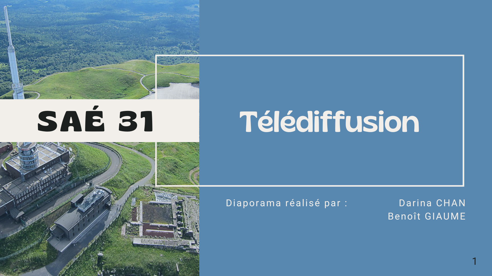

Nous avons développé une application android qui affiche la météo de l'éléctricité, de la même façon que Ecowatt. Ce projet a été réalisé avec Thomas BLANC, Aude BOULET, Tarek EL DADA et Benoît GIAUME. Toutes les informations sur la réalisation de ce projet sont sur Github. Lien github vers le programme.
Développemment d'un système informatique qui permet de prendre des photos d'un banc avionique. Ces photos sont hébergées sur un site web dans une base de données. La prise de photo est automatisée et se déclenche sous certaines conditions. Pour réussir ce travail avec mon binôme, Tarek EL DADA, une bonne planification du projet et une bonne organisation étaient nécessaires.
Développemment d'un Jeu de Quilles et de son interface en python. Design de l'interface en référence au jeu Among Us. Lien github vers le programme.
La certification CCNA, ou Cisco Certified Network Associate, est une certification professionnelle délivrée par Cisco. Cette certification est reconnue dans le monde entier et atteste des compétences en matière de réseaux informatiques et de technologies Cisco.
CCNA 1 aborde les fondamentaux des réseaux, tels que les protocoles de communication, les réseaux locaux et les réseaux étendus, les adresses IP, les routeurs et les commutateurs. Les étudiants apprennent également à installer, configurer et dépanner des réseaux de base. Tandis que le CCNA 2 se concentre sur les concepts de routage et de commutation avancés, ainsi que sur les protocoles de routage, tels que RIP, OSPF et EIGRP.
J'ai obtenu mon certificat CCNA 1 et 2 accompagnés des lettres de Cisco.
Dans le cadre de ma formation, j'ai réalisé un OSINT sur Guillaume Poupard, ancien directeur de l'ANSSI. J'ai également effectué un pentest sur un système de l'université. Cliquez sur les images pour lire les rapports !

Réalisation d'une vidéo avec Nicolas GARCIA pour présenter la cyber-attaque Dark Hotel dans le but de comprendre les différentes étapes de l'attaque et de se sensibiliser à la cybersécurité.
Avec mon binôme, Benoît GIAUME, nous avons étudié la télévision numérique terrestre et de la télévision numérique par satellite. Nous avons également manipulé des mesureur de champs et une antenne parabolique. À l'issue de cette étude, nous avons produit un rapport ainsi qu'un diaporama sur les principes de la télévision. Cliquez sur les images pour lire le rapport et voir le diaporama !
